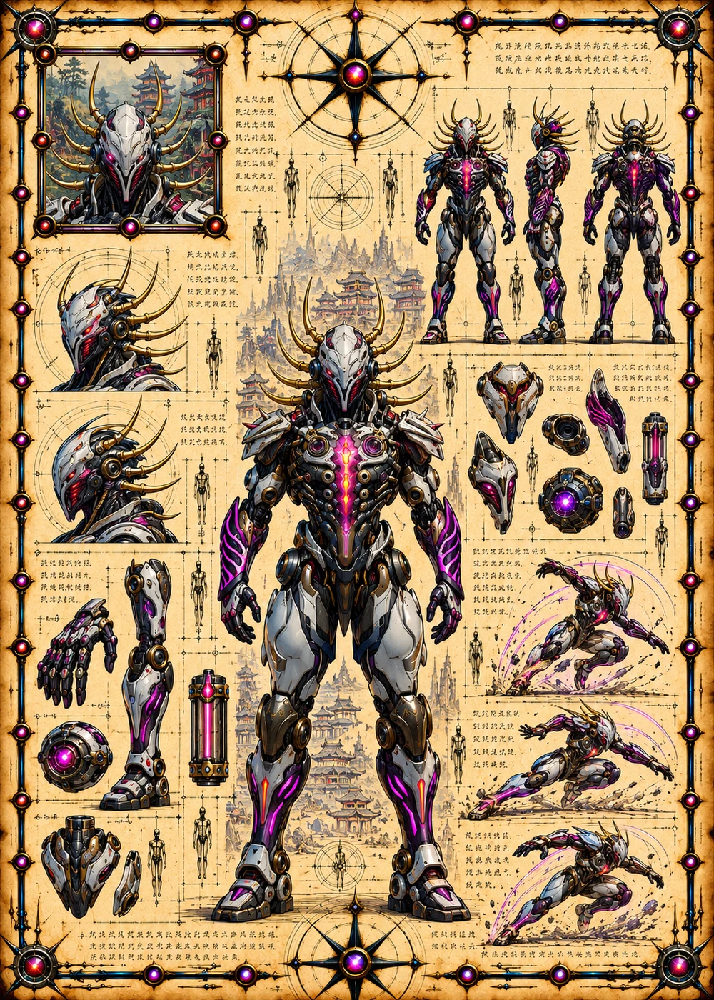

©
©
GENEZYS ARCHIVE · Earth 2 · Synthbot
Gudial
Shimmer Vessel


Archive record
Gudial is the Syndicate's most guarded secret: a Synthbot that can read and rewrite living code. The DNA Match strips an enemy's energy to nothing, and hits even harder against those who hide behind a shield. What the Syndicate intends to do with the DNA of Earth 1, nobody on our side knows yet.
Combat signature
DNA Match
100 Cosmara
350 Animus
330 Vitalis
Rewrites genetic code on contact: Sets the target's Cosmara to 0 and deals 100 damage. If the shield was activated deals 150 damage instead.
Genezys 04:09 ™&©2026LEGIONS
Return to LEGIONS